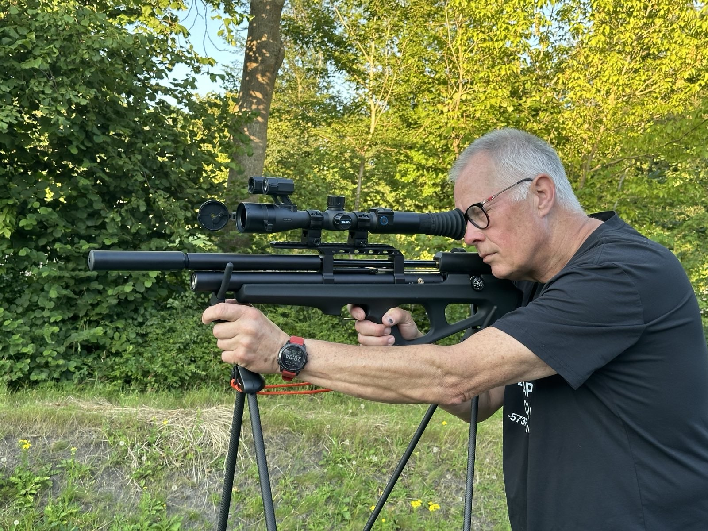

Over mij

Mijn naam is Rolf van Trigt. Hoewel ik nog werkzaam ben in de gezondheidszorg, heeft mijn pad me geleid naar het vak van professioneel rattenschutter.
Het begon allemaal met een brutale rat bij ons eigen kippenhok die voor overlast en schade zorgde. Toen traditionele vangmethodes en klemmen niet werkten, ontdekte ik de Ratslag methode: het bestrijden van ratten met een luchtbuks onder beheerste omstandigheden. Dit bleek de oplossing: een snelle dood voor de rat en geen nevenschade.
Inmiddels ben ik een RPMV-geregistreerde ongediertebestrijder. Ik heb de professionele opleiding Bestrijdings Technicus voltooid en ben gecertificeerd voor het gebruik van de PCP-buks.
Mijn specialiteit
Ik focus me op de bestrijding van ratten met een professioneel PCP gewer en thermische nachtzichtapparatuur. De voordelen zijn duidelijk:
- • Onmiddellijke dood zonder lijden.
- • Geen gebruik van schadelijk gif (IPM-conform).
- • Snel resultaat: in twee uur kunnen tientallen ratten worden bestreden.
- • Geen gevaar voor huisdieren of vee.
Lid van ERaNed: Ecologische Rattenschutters Nederland.